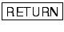

When you start it, vi is in editing mode. The command a switches vi to text mode and allows you to append characters from the cursor's current position. After you type a, every character you type appears in the terminal and is added to the contents of the file. So typing aThis is some text. will add the characters ``This is some text.'' to the file.

To start a new line, just press the  key. You can continue to type in text mode until you have finished inputing the text you want.

To leave text mode press the escape key
 .
.